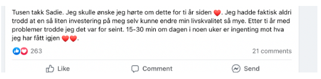

Hypopressiv Trening Norge
MEN FØRST:
🥰 Jeg skjønner det hvis du synes det er litt vanskelig å bestemme deg for om du skal bli med oppstarten mandag [[contact.custom_fields.Fellesoppstart]] (du kan se på opptak av oppstarten om du ikke kan være med live).
Dette skal kjennes som et enkelt valg for deg.
Nå er du klar for en endring, du fortjener å føle deg fri i kroppen din og være den beste utgaven av deg selv i 2026!
😍OK, her kommer tankeeksperimentet!😍
Du forteller deg selv at det er vanlig. At du klarer å leve med det. At det går seg til. At du må tåle såpass...
|
👉🏼 Gjør et kjapt tankeeksperiment med meg: lukk øynene og se for deg at din datter (eller niese eller søster) kommer til deg og forteller deg om plagene hun har, som holder henne tilbake fra å leve slik hun vil. Hva ville du gjort? Jeg er SIKKER på at du ville beveget himmel og jord for at hun skulle fått hjelp, og hjulpet henne i gang (mest sannsynlig med Hypopressiv trening Norge metoden nå som du har sett resultatene vi får til!)
😱 Det er åpenbart at du ville gjort det, sant? For det er det vi gjør for de vi elsker, vi vil ta vare på de.
|
😘 DU er like viktig! Du fortjener å bli bedre, DU fortjener å få hjelp, Du fortjener tiden og omsorgen som skal til for å bli bedre av plagene, store eller "små", som holder DEG tilbake fra å leve livet slik DU vil. Hvis ikke nå, når? Livet er her og nå. Og du fortjener å leve det til det fulleste! |
Det er mye man skal finne seg i i dette livet, heldigvis gjelder det faktisk IKKE noen av tingene over.
Dette er plager de aller, aller fleste kan bli kvitt bare de får vite HVORFOR plagene oppstod og HVA de kan gjøre for å bli bedre!
Nå har DU muligheten til å endelig både forstå HVORFOR du har fått disse plagene i første omgang og begynne å gjøre noe med de med nettkurset i Hypopressiv trening Norge metoden som allerede har hjulpet 12.000+ norske kvinner!
|
🚨Tiden renner ut [[contact.custom_fields.Offerdeadline]]!!🚨 |
🎉Bli med innen [[contact.custom_fields.Offerdeadline]] og få med deg FELLES OPPSTART mandag [[contact.custom_fields.Fellesoppstart]] (du kan se på opptak også), PRIVATTIME inkludert, rabatt på treningspakke, og 3MND med live oppfølging inkludert! 🎉
| 🔗🔗Følg denne linken og bestem deg for at nå er det din tur til å ta vare på deg selv ❤️🔗🔗 |
Jeg gleder meg til å kunne hjelpe deg!
Hjertelig hilsen ❤️
Sadie
Gikk du glipp av sendingen eller vil se den igjen? Få med deg reprisen her! - jeg lover deg a-ha opplevelser, latter, og videoer av ekte underliv både med og uten fremfall 😱
Og en liten tilbakemelding fra en veldig glad dame:

Resultater varierer fra person til person. Dette er ikke medisinsk behandling.
Hypopressiv Trening Norge AS
Du mottar denne e-posten fordi du er påmeldt vår liste.